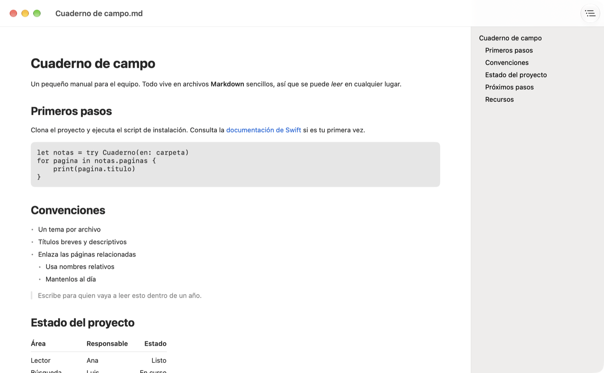
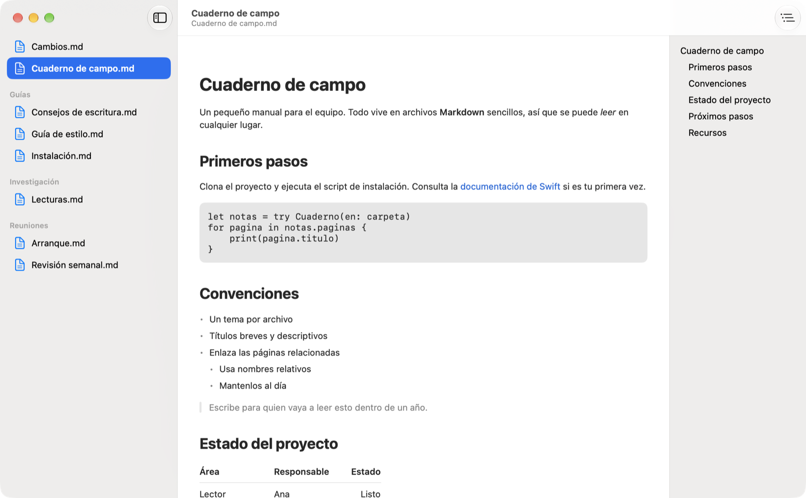
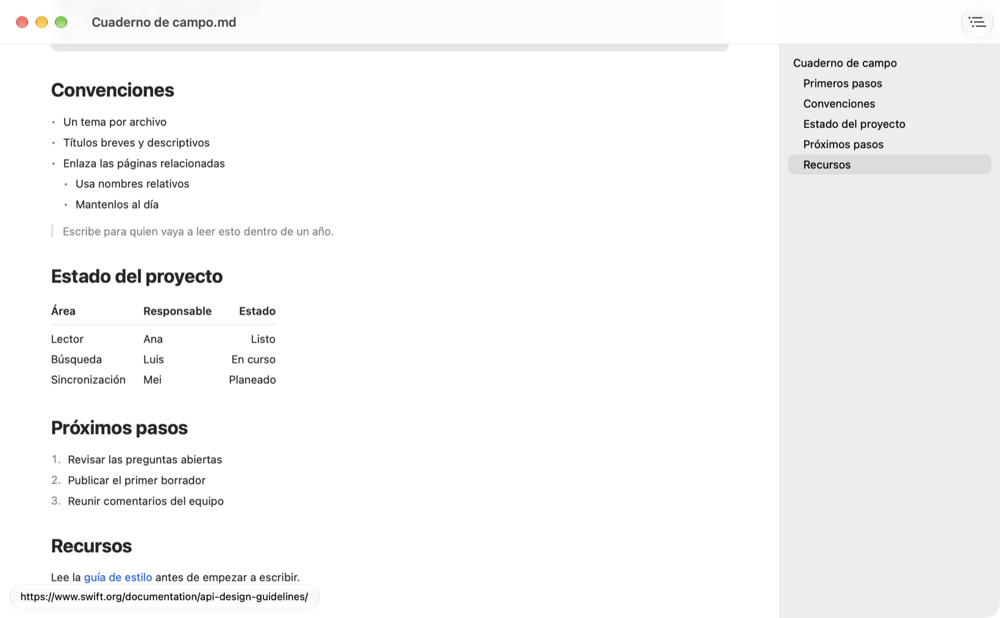

Gratuito y de código abierto, para Mac
Markdown, como debe verse
Amoxtli es un visor de Markdown nativo para Mac. Abre un archivo o una carpeta completa y léelos con buen formato, sin configurar nada.
brew install --cask k4rmakoma0/tap/amoxtliRequiere macOS 27.

Explora una carpeta completa de notas
Abre una carpeta para ver sus archivos Markdown, también los de subcarpetas, agrupados por carpeta. Elige uno y empieza a leer.

Mira adónde lleva un enlace antes de abrirlo
Pasa el cursor sobre un enlace para ver su URL completa. Amoxtli te avisa antes de abrir un sitio desconocido, o si el texto de un enlace nombra un sitio distinto de su destino.

Índice
Se crea a partir de los encabezados del documento. Haz clic en una entrada para ir a esa sección.
Todo en su lugar
Listas anidadas, citas, bloques de código, tablas, tachado e imágenes remotas.
Claro y oscuro
Sigue la apariencia de tu sistema y tu color de acento.
Solo lectura
Amoxtli nunca modifica tus archivos, así que puedes abrir lo que sea sin preocuparte.
Privado
Sin cuentas, anuncios ni rastreo. Solo se conecta para cargar las imágenes de tus documentos.
En tu idioma
Disponible en 11 idiomas y compatible con VoiceOver.
Consigue Amoxtli
Gratis en todos los canales, y compilado a partir del mismo código fuente.
Homebrew
Instálalo y actualízalo desde la terminal.
brew install --cask k4rmakoma0/tap/amoxtliDescarga directa
Una app notarizada desde GitHub Releases. Descomprímela y muévela a Aplicaciones.
Última versiónMac App Store
Próximamente.
Snap Store · Linux
Próximamente.
Apoya a Amoxtli
Amoxtli es gratuito y de código abierto. Si te resulta útil, puedes invitarme un café para apoyar su desarrollo.
Invítame un caféAmoxtli significa “libro” en náhuatl.